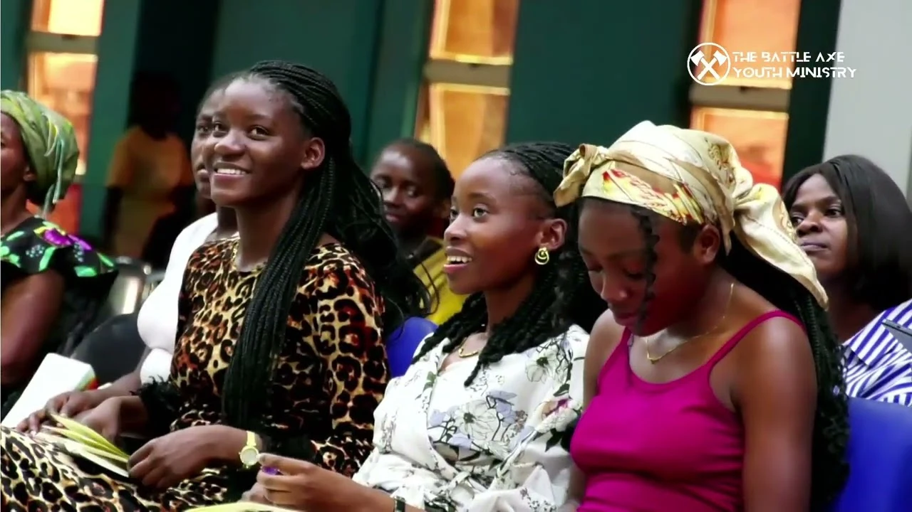

Our mission
To proclaim the unconditional love of Jesus Christ through prayer and teaching God's Word, bringing deliverance, healing, and restoration to those who are oppressed.

Founded 9 March 2009 · Lusaka, Zambia
Proclaiming the unconditional love of Jesus Christ through prayer, the teaching of God's Word, healing, and deliverance across Zambia and the nations.

A home of healing & deliverance
Shalom Embassy Ministries International was founded on 9 March 2009 by Apostle Dr. Sunday Sinyangwe and Pastor Bupe Lumbwa Sinyangwe in Lusaka, Zambia. After faithfully serving in one Pentecostal denomination for seventeen years, they were released by God to establish a ministry in Lusaka's Kanyama area with a clear commission: to preach the full Gospel, heal the brokenhearted, and bring deliverance to those who are oppressed.
The ministry's motto, “Nothing missing, nothing broken,” is drawn from the Hebrew meaning of Shalom and anchored in Judges 6:24: Jehovah Shalom, the LORD is peace. Together with all of its branch churches, Shalom Embassy recognises that the Word of God, the Holy Spirit, prayer, humility, and purity are foundational to building believers in the school of impact and greatness.
From its beginnings in Kanyama, the church has grown into a movement with its headquarters at Plot 995, Garden House, Off Mumbwa Road, and over 21 branches planted across Lusaka, rural villages, and other parts of Zambia. In March 2026, the Shalom Embassy family celebrated 17 years of God's faithfulness, healing, deliverance, and transformed lives.

The journey
From Kanyama to Garden House and 21+ branches across Zambia, every chapter has been sustained by prayer and grace.
After serving for 17 years in a Pentecostal denomination, Apostle Sunday and Pastor Bupe Sinyangwe are released to establish Shalom Embassy Ministries International in Lusaka's Kanyama township.
The Standing In The Gap prayer network contends for families and the nation through overnight vigils and dry fasts, while branches are planted across Mtendere, Mandevu, Matero, Foxdale, Chibombo, and rural villages across Zambia.
Gathering at the Main Auditorium at Plot 995, Garden House, Off Mumbwa Road, the church celebrates 17 years of grace, growth, healing, and deliverance alongside guest minister Bishop Dr. Edgar Ng'ambi.
With Morning Glory prayers Monday to Saturday, Wednesday midweek services, Thursday healing and deliverance, monthly 7-hour healing and deliverance encounters, quarterly Big Sunday gatherings, published prayer books, and over 294,000 followers online, Shalom Embassy continues to equip believers to fulfil their God-given destiny.
What we carry
The commission that governs our teaching, intercession, and outreach across Zambia.
To proclaim the unconditional love of Jesus Christ through prayer and teaching God's Word, bringing deliverance, healing, and restoration to those who are oppressed.
To raise an army of men, women, youths, and children equipped with the right knowledge of God, spiritual warfare, soul-winning, and godly character, supported by humanitarian and charitable outreach.
Nothing missing, nothing broken (Judges 6:24). We are commissioned to take deliverance to the captives, strength to the weary, restoration to the backslidden, and salvation to the lost.
Leadership
Called, appointed, and anointed to equip the saints in the Word, prayer, humility, and purity.

Apostle Dr. Sunday Sinyangwe is the founder and vision carrier of Shalom Embassy Ministries International and The Standing In The Gap Team Prayer Ministry—a movement renowned across Zambia for intercession, overnight vigils, and deliverance. Called and anointed to preach the full Gospel of our Lord Jesus Christ, he is commissioned to take deliverance to the captives, victory to the victims of satanic and witchcraft oppression, strength to those weighed down by circumstances, and salvation to the lost.
He is the author of the quarterly Jubilee Prayer Book series, Dealing With Evil Patterns, The Year of Keeping The Fire Burning, and co-author of the daily devotional Everyday With The Holy Spirit. He resides in Lusaka with his wife, Pastor Bupe Lumbwa Sinyangwe, and together they are blessed with three sons: Jonathan, Will, and Yangeni.
“When Christ is lifted high in a life and in a house, multitudes are drawn, yokes are broken, and no life leaves the same.”
Pastor Bupe Lumbwa Sinyangwe is a seasoned teacher of the Word whom the Lord has raised in this generation to bring out the counsel of God with clarity and grace. She is the visionary and founder of the Virtuous Women Ministry—one of the largest women's ministries in Zambia, focused on raising a Spirit-filled army of watchmen and incubating every woman to reach her greatest potential.
Co-author of Everyday With The Holy Spirit, Pastor Bupe is deeply committed to empowering and reaching vulnerable women and girls in villages across Zambia, leading them to Christ, and building churches in rural communities across the nation.
“When the spirit of a believer is educated by the Word and partnered with the Holy Spirit, destiny is fulfilled without limitation.”
Apostle Sunday Sinyangwe is a spiritual son of Dr. Pastor Paul Enenche of Dunamis International Gospel Centre, Abuja, Nigeria. That heritage of fire on the prayer altar, sound scriptural teaching, and integrity continues to shape Shalom Embassy. The ministry also honours Bishop Dr. Edgar Ng'ambi for his fatherly counsel and apostolic blessing over the house.
What we believe
These are the convictions that anchor our faith and shape our life together.
The Scriptures are the inspired, infallible Word of God and our final authority for faith and life.
We believe in one God eternally existing in three persons: Father, Son, and Holy Spirit.
Salvation is by grace through faith in Jesus Christ alone — His death, burial, and resurrection.
The Holy Spirit empowers, gifts, and guides every believer for holy living and fruitful service.
Divine healing and deliverance are available today through the power of Jesus Christ.
The Church is the family of God, called to love, serve, make disciples, and carry the Gospel to the nations.
Ministries
Find your people, grow your gift, and serve the purpose of God with us.

An interdenominational and church prayer network contending for families, leaders, and Zambia through Midnight Watch, Morning Glory, dry fasts, and overnight prayer vigils.
Join the prayer team
Founded by Pastor Bupe Sinyangwe to raise a Spirit-filled army of watchmen, equipping women in prayer, teaching, family leadership, and rural outreach across Zambia.
Connect with Virtuous Women
Equipping young men and women to discover their identity, purity, and calling in Christ through Sunday youth services, the Battle Axe Conference, and ROAR worship encounters.
Get connected
Building men of faith, godly character, spiritual authority, and purposeful leadership in their homes, workplaces, and communities.
Join the brotherhood
Ministering healing, freedom from oppression, and restoration in spirit, soul, and body through the Word of God and the power of the Holy Ghost.
See deliverance services
Leading the house into God's presence through anointed music and media while laying a strong biblical foundation for children in the family.
Serve with usCome and see
Join us this Sunday, or reach out and let us pray with you. We would love to meet you.